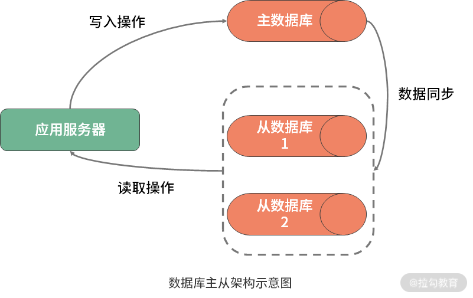

- 00 如何正确学习一款分库分表开源框架？.md.html
- 01 从理论到实践：如何让分库分表真正落地？.md.html
- 02 顶级项目：ShardingSphere 是一款什么样的 Apache 开源软件？.md.html
- 03 规范兼容：JDBC 规范与 ShardingSphere 是什么关系？.md.html
- 04 应用集成：在业务系统中使用 ShardingSphere 的方式有哪些？.md.html
- 05 配置驱动：ShardingSphere 中的配置体系是如何设计的？.md.html
- 06 数据分片：如何实现分库、分表、分库+分表以及强制路由？（上）.md.html
- 07 数据分片：如何实现分库、分表、分库+分表以及强制路由？（下）.md.html
- 08 读写分离：如何集成分库分表+数据库主从架构？.md.html
- 09 分布式事务：如何使用强一致性事务与柔性事务？.md.html
- 10 数据脱敏：如何确保敏感数据的安全访问？.md.html
- 11 编排治理：如何实现分布式环境下的动态配置管理？.md.html
- 12 从应用到原理：如何高效阅读 ShardingSphere 源码？.md.html
- 13 微内核架构：ShardingSphere 如何实现系统的扩展性？.md.html
- 14 分布式主键：ShardingSphere 中有哪些分布式主键实现方式？.md.html
- 15 解析引擎：SQL 解析流程应该包括哪些核心阶段？（上）.md.html
- 16 解析引擎：SQL 解析流程应该包括哪些核心阶段？（下）.md.html
- 17 路由引擎：如何理解分片路由核心类 ShardingRouter 的运作机制？.md.html
- 18 路由引擎：如何实现数据访问的分片路由和广播路由？.md.html
- 19 路由引擎：如何在路由过程中集成多种路由策略和路由算法？.md.html
- 20 改写引擎：如何理解装饰器模式下的 SQL 改写实现机制？.md.html
- 21 执行引擎：分片环境下 SQL 执行的整体流程应该如何进行抽象？.md.html
- 22 执行引擎：如何把握 ShardingSphere 中的 Executor 执行模型？（上）.md.html
- 23 执行引擎：如何把握 ShardingSphere 中的 Executor 执行模型？（下）.md.html
- 24 归并引擎：如何理解数据归并的类型以及简单归并策略的实现过程？.md.html
- 25 归并引擎：如何理解流式归并和内存归并在复杂归并场景下的应用方式？.md.html
- 26 读写分离：普通主从架构和分片主从架构分别是如何实现的？.md.html
- 27 分布式事务：如何理解 ShardingSphere 中对分布式事务的抽象过程？.md.html
- 28 分布式事务：ShardingSphere 中如何集成强一致性事务和柔性事务支持？（上）.md.html
- 29 分布式事务：ShardingSphere 中如何集成强一致性事务和柔性事务支持？（下）.md.html
- 30 数据脱敏：如何基于改写引擎实现低侵入性数据脱敏方案？.md.html
- 31 配置中心：如何基于配置中心实现配置信息的动态化管理？.md.html
- 32 注册中心：如何基于注册中心实现数据库访问熔断机制？.md.html
- 33 链路跟踪：如何基于 Hook 机制以及 OpenTracing 协议实现数据访问链路跟踪？.md.html
- 34 系统集成：如何完成 ShardingSphere 内核与 Spring+SpringBoot 的无缝整合？.md.html
- 35 结语：ShardingSphere 总结及展望.md.html
- 捐赠
08 读写分离：如何集成分库分表+数据库主从架构？
为了应对高并发场景下的数据库访问需求，读写分离架构是现代数据库架构的一个重要组成部分。今天，我就和你一起来学习 ShardingSphere 中所提供的读写分离机制，以及这一机制如何与前面介绍的分库分表和强制路由整合在一起使用。
ShardingSphere 中的读写分离
为了应对数据库读写分离，ShardingSphere 所提供的解决方案还是依赖于强大的配置体系。为了更好地理解这些读写分离相关的配置，我们有必要对读写分离与主从架构有一定的了解。
读写分离与主从架构
目前，大部分的主流关系型数据库都提供了主从架构的实现方案，通过配置两台或多台数据库的主从关系，可以将一台数据库服务器的数据更新自动同步到另一台服务器上。而应用程序可以利用数据库的这一功能，实现数据的读写分离，从而改善数据库的负载压力。

可以看到，所谓的读写分离，实际上就是将写操作路由到主数据库，而将读操作路由到从数据库。对于互联网应用而言，读取数据的需求远远大于写入数据的需求，所以从数据库一般都是多台。当然，对于复杂度较高的系统架构而言，主库的数量同样也可以是多台。
读写分离与 ShardingSphere
就 ShardingSphere 而言，支持主从架构下的读写分离是一项核心功能。目前 ShardingSphere 支持单主库、多从库的主从架构来完成分片环境下的读写分离，暂时不支持多主库的应用场景。
在数据库主从架构中，因为从库一般会有多台，所以当执行一条面向从库的 SQL 语句时，我们需要实现一套负载均衡机制来完成对目标从库的路由。ShardingSphere 默认提供了随机（Random）和轮询（RoundRobin）这两种负载均衡算法来完成这一目标。
另一方面，由于主库和从库之间存在一定的同步时延和数据不一致情况，所以在有些场景下，我们可能更希望从主库中获取最新数据。ShardingSphere 同样考虑到了这方面需求，开发人员可以通过 Hint 机制来实现对主库的强制路由。
配置读写分离
实现读写分离要做的还是配置工作。通过配置，我们的目标是获取支持读写分离的 MasterSlaveDataSource，而 MasterSlaveDataSource 的创建依赖于 MasterSlaveDataSourceFactory 工厂类：
public final class MasterSlaveDataSourceFactory {
public static DataSource createDataSource(final Map<String, DataSource> dataSourceMap, final MasterSlaveRuleConfiguration masterSlaveRuleConfig, final Properties props) throws SQLException {
return new MasterSlaveDataSource(dataSourceMap, new MasterSlaveRule(masterSlaveRuleConfig), props);
}
}
在上面这段代码中，我们可以看到 createDataSource 方法中传入了三个参数，除了熟悉的 dataSourceMap 和 props 之外，还有一个 MasterSlaveRuleConfiguration，而这个 MasterSlaveRuleConfiguration 包含了所有我们需要配置的读写分离信息：
public class MasterSlaveRuleConfiguration implements RuleConfiguration {
//读写分离数据源名称
private final String name;
//主库数据源名称
private final String masterDataSourceName;
//从库数据源名称列表
private final List<String> slaveDataSourceNames;
//从库负载均衡算法
private final LoadBalanceStrategyConfiguration loadBalanceStrategyConfiguration;
…
}
从 MasterSlaveRuleConfiguration 类所定义的变量中不难看出，我们需要配置读写分离数据源名称、主库数据源名称、从库数据源名称列表以及从库负载均衡算法这四个配置项，仅此而已。
系统改造：如何实现读写分离？
在掌握了读写分离的基本概念以及相关配置项之后，我们回到案例，看如何在单库单表架构中引入读写分离机制。
第一步，仍然是设置用于实现读写分离的数据源。为了演示一主多从架构，我们初始化了一个主数据源 dsmaster 以及两个从数据源 dsslave0 和 dsslave1：
spring.shardingsphere.datasource.names=dsmaster,dsslave0,dsslave1
spring.shardingsphere.datasource.dsmaster.type=com.alibaba.druid.pool.DruidDataSource
spring.shardingsphere.datasource.dsmaster.driver-class-name=com.mysql.jdbc.Driver
spring.shardingsphere.datasource.dsmaster.url=jdbc:mysql://localhost:3306/dsmaster
spring.shardingsphere.datasource.dsmaster.username=root
spring.shardingsphere.datasource.dsmaster.password=root
spring.shardingsphere.datasource.dsslave0.type=com.alibaba.druid.pool.DruidDataSource
spring.shardingsphere.datasource.dsslave0.driver-class-name=com.mysql.jdbc.Driver
spring.shardingsphere.datasource.dsslave0.url=jdbc:mysql://localhost:3306/dsslave0
spring.shardingsphere.datasource.dsslave0.username=root
spring.shardingsphere.datasource.dsslave0.password=root
spring.shardingsphere.datasource.dsslave1.type=com.alibaba.druid.pool.DruidDataSource
spring.shardingsphere.datasource.dsslave1.driver-class-name=com.mysql.jdbc.Driver
spring.shardingsphere.datasource.dsslave1.url=jdbc:mysql://localhost:3306/dsslave1?serverTimezone=UTC&useSSL=false&useUnicode=true&characterEncoding=UTF-8
spring.shardingsphere.datasource.dsslave1.username=root
spring.shardingsphere.datasource.dsslave1.password=root
有了数据源之后，我们需要设置 MasterSlaveRuleConfiguration 类中所指定的 4 个配置项，这里负载均衡算法设置的是 random，也就是使用的随机算法：
spring.shardingsphere.masterslave.name=health_ms
spring.shardingsphere.masterslave.master-data-source-name=dsmaster
spring.shardingsphere.masterslave.slave-data-source-names=dsslave0,dsslave1
spring.shardingsphere.masterslave.load-balance-algorithm-type=random
现在我们来插入 User 对象，从控制台的日志中可以看到，ShardingSphere 执行的路由类型是 master-slave ，而具体 SQL 的执行是发生在 dsmaster 主库中：
2020-05-25 19:58:08.721 INFO 4392 --- [ main] ShardingSphere-SQL : Rule Type: master-slave
2020-05-25 19:58:08.721 INFO 4392 --- [ main] ShardingSphere-SQL : SQL: INSERT INTO user (user_id, user_name) VALUES (?, ?) ::: DataSources: dsmaster
Insert User:1
2020-05-25 19:58:08.721 INFO 4392 --- [ main] ShardingSphere-SQL : Rule Type: master-slave
2020-05-25 19:58:08.721 INFO 4392 --- [ main] ShardingSphere-SQL : SQL: INSERT INTO user (user_id, user_name) VALUES (?, ?) ::: DataSources: dsmaster
Insert User:2
…
然后，我们再对 User 对象执行查询操作并获取 SQL 执行日志：
2020-05-25 20:00:33.066 INFO 3364 --- [main] ShardingSphere-SQL : Rule Type: master-slave
2020-05-25 20:00:33.066 INFO 3364 --- [main] ShardingSphere-SQL : SQL : SELECT * FROM user; ::: DataSources: dsslave0
可以看到，这里用到的 DataSource 是 dsslave0，也就是说查询操作发生在 dsslave0 从库中。由于设置的是随机负载均衡策略，当我们多次执行查询操作时，目标 DataSource 会在 dsslave0 和 dsslave1 之间交替出现。
系统改造：如何实现读写分离+分库分表？
我们同样可以在分库分表的基础上添加读写分离功能。这时候，我们需要设置两个主数据源 dsmaster0 和 dsmaster1，然后针对每个主数据源分别设置两个从数据源：
spring.shardingsphere.datasource.names=dsmaster0,dsmaster1,dsmaster0-slave0,dsmaster0-slave1,dsmaster1-slave0,dsmaster1-slave1
这时候的库分片策略 default-database-strategy 同样分别指向 dsmaster0 和 dsmaster1 这两个主数据源：
spring.shardingsphere.sharding.default-database-strategy.inline.sharding-column=user_id
spring.shardingsphere.sharding.default-database-strategy.inline.algorithm-expression=dsmaster$->{user_id % 2}
而对于表分片策略而言，我们还是使用在 07 课时中介绍的分片方式进行设置：
spring.shardingsphere.sharding.tables.health_record.actual-data-nodes=dsmaster$->{0..1}.health_record$->{0..1}
spring.shardingsphere.sharding.tables.health_record.table-strategy.inline.sharding-column=record_id
spring.shardingsphere.sharding.tables.health_record.table-strategy.inline.algorithm-expression=health_record$->{record_id % 2}
完成这些设置之后，同样需要设置两个主数据源对应的配置项：
spring.shardingsphere.sharding.master-slave-rules.dsmaster0.master-data-source-name=dsmaster0
spring.shardingsphere.sharding.master-slave-rules.dsmaster0.slave-data-source-names=dsmaster0-slave0, dsmaster0-slave1
spring.shardingsphere.sharding.master-slave-rules.dsmaster1.master-data-source-name=dsmaster1
spring.shardingsphere.sharding.master-slave-rules.dsmaster1.slave-data-source-names=dsmaster1-slave0, dsmaster1-slave1
这样，我们就在分库分表的基础上添加了对读写分离的支持。ShardingSphere 所提供的强大配置体系使得开发人员可以在原有配置的基础上添加新的配置项，而不需要对原有配置做过多调整。
系统改造：如何实现读写分离下的强制路由？
在上个课时中我们介绍了强制路由，在这个基础上，我将给出如何基于 Hint，完成读写分离场景下的主库强制路由方案。
要想实现主库强制路由，我们还是要使用 HintManager。HintManager 专门提供了一个 setMasterRouteOnly 方法，用于将 SQL 强制路由到主库中。我们把这个方法也封装在 HintManagerHelper 帮助类中：
public class HintManagerHelper {
static void initializeHintManagerForMaster(final HintManager hintManager) {
hintManager.setMasterRouteOnly();
}
}
现在，我们在业务代码中加入主库强制路由的功能，下面这段代码演示了这个过程：
@Override
public void processWithHintValueMaster() throws SQLException, IOException {
DataSource dataSource = DataSourceHelper.getDataSourceForMaster();
try (HintManager hintManager = HintManager.getInstance();
Connection connection = dataSource.getConnection();
Statement statement = connection.createStatement()) {
HintManagerHelper.initializeHintManagerForMaster(hintManager);
ResultSet result = statement.executeQuery("select user_id, user_name from user");
while (result.next()) {
System.out.println(result.getLong(1) + ": " + result.getString(2));
}
}
}
执行这段代码，可以在控制台日志中获取执行的结果：
2020-05-25 22:06:17.166 INFO 16680 --- [ main] ShardingSphere-SQL : Rule Type: master-slave
2020-05-25 22:06:17.166 INFO 16680 --- [ main] ShardingSphere-SQL : SQL: select user_id, user_name from user ::: DataSources: dsmaster
1: user_1
2: user_2
…
显然，这里的路由类型是 master-slave，而执行 SQL 的 DataSource 只有 dsmaster，也就是说，我们完成了针对主库的强制路由。
小结
继续承接上一课时的内容，今天我们讲解 ShardingSphere 中的读写分离机制。在日常开发过程中，读写分离是应对高并发数据访问的一种有效技术手段。而在ShardingSphere中，读写分离既可以单独使用，也可以和分库组合在一起使用。ShardingSphere的另一个强大之处还在于提供了针对主库的强制路由机制，这在需要确保获取主库最新数据的场景下非常有用。
这里给你留一道思考题：如果我们想要在主从架构中只访问主库中的数据，在 ShardingSphere 中有什么方法可以做到这一点？
© 2019 - 2023 Liangliang Lee. Powered by gin and hexo-theme-book.